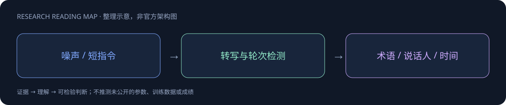

Grok Voice Transcribe 2.0

一页速览
| 维度 | 当前证据 |
|---|---|
| 发布时间 | 2026-09-18 |
| 类型 | 专项支线 / family · Speech |
| 关键事实 1 | 发布：2026-09-18 |
| 关键事实 2 | 语音转写专项 |
| 关键事实 3 | 参数、训练规模待官方正文 |
| 检查日期 | 2026-10-13；官方原始资料在同级src/ |
短指令的识别质量直接影响 Agent 动作
9月18日官方发布。相对长音频语境，短语音命令缺少上下文，数字、专名或一个动词错误即可改变操作。官方针对现实多语种噪声样本做后训练，不能将其解释为公开了可复现全部训练语料。
| 项目 | 官方公布 |
|---|---|
| 19语言短语集合WER | 20.6%→6.8% |
| 多通道 | 最多8通道 |
| 自定义词汇 | 最多100术语 |
| 返回信息 | 时间戳、confidence、说话人区分 |
| 发布价格 | 批量$0.10/小时；流式$0.20/小时 |
“准确两倍”来自特定内部集合，不代表所有语言、录音条件都如此。WER不能和CER直接比较；smart turn detection也需要通过打断、静默、语句未完实验测量。
怎样用到 Voice Agent
验收应包括数字、地名、权限相关动词、噪声与多人重叠，单列“识别合理但执行错指令”。低confidence触发确认比盲目行动稳妥；版本1的退役计划属于兼容性事项，不产生新的Atlas节点。
对 Agent Training 的启发
以上是基于已读官方资料的研究判断，不是官方保证，也没有在本机运行模型推理或复现论文成绩。下一步优先补独立验证器、固定任务/版本和完整失败轨迹，避免只保存最好样例。
一手资料与导航
- [S1] Tech Blog
原始下载文件与SHA-256见 抓取记录。报告保留链接，不抓PDF；动态网页响应若只有壳文件，不将其标成完整离线正文。
📊 相关可视化: Grok Voice Transcribe 2.0 中文Poster